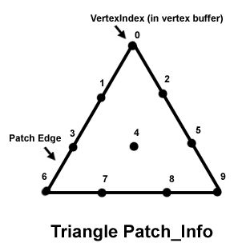

description: Describes a triangular high-order patch. ms.assetid: 3f97120b-3b32-4f95-8614-7b263ff330db title: D3DTRIPATCH_INFO structure (D3D9Types.h) ms.topic: reference ms.date: 05/31/2018 topic_type:
Describes a triangular high-order patch.
typedef struct D3DTRIPATCH_INFO {
UINT Â Â Â Â Â Â Â Â Â StartVertexOffset;
UINT Â Â Â Â Â Â Â Â Â NumVertices;
D3DBASISTYPE Â Basis;
D3DDEGREETYPE Degree;
} D3DTRIPATCH_INFO, *LPD3DTRIPATCH_INFO;
StartVertexOffset
Type: UINT
Starting vertex offset, in number of vertices.
NumVertices
Type: UINT
Number of vertices.
Basis
Type: D3DBASISTYPE
Member of the D3DBASISTYPE enumerated type, which defines the basis type for the triangular high-order patch. The only valid value for this member is D3DBASIS_BEZIER.
Degree
Type: D3DDEGREETYPE
Member of the D3DDEGREETYPE enumerated type, defining the degree type for the triangular high-order patch.
| Value | Number of vertices |
|---|---|
| D3DDEGREE_CUBIC | 10 |
| D3DDEGREE_LINEAR | 3 |
| D3DDEGREE_QUADRATIC | N/A |
| D3DDEGREE_QUINTIC | 21 |
Â
N/A - Not available. Not supported.
For example, the following diagram identifies the vertex order and segment numbers for a cubic Bézier triangle patch. The vertex order determines the segment numbers used by DrawTriPatch. The offset is the number of bytes to the first triangle patch vertex in the vertex buffer.

| Requirement | Value |
|---|---|
| Header | D3D9Types.h |
Â
Â